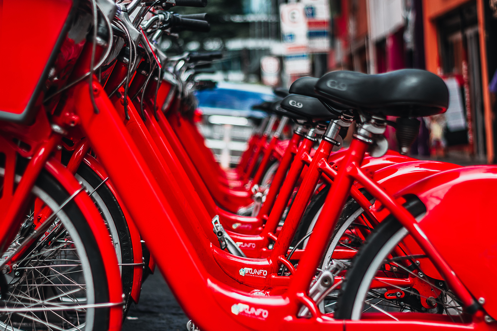
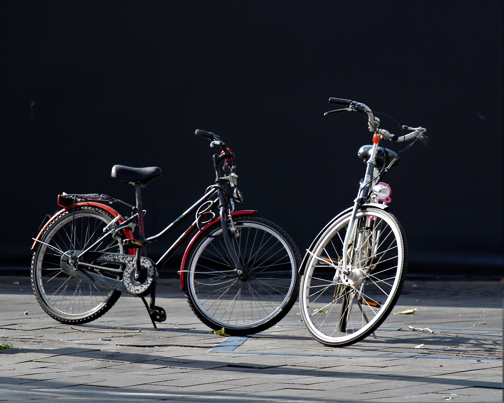
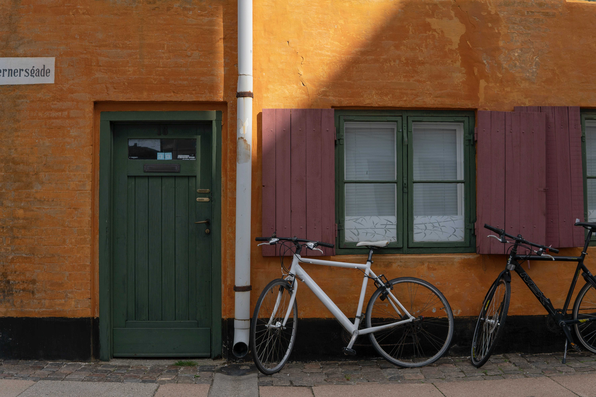
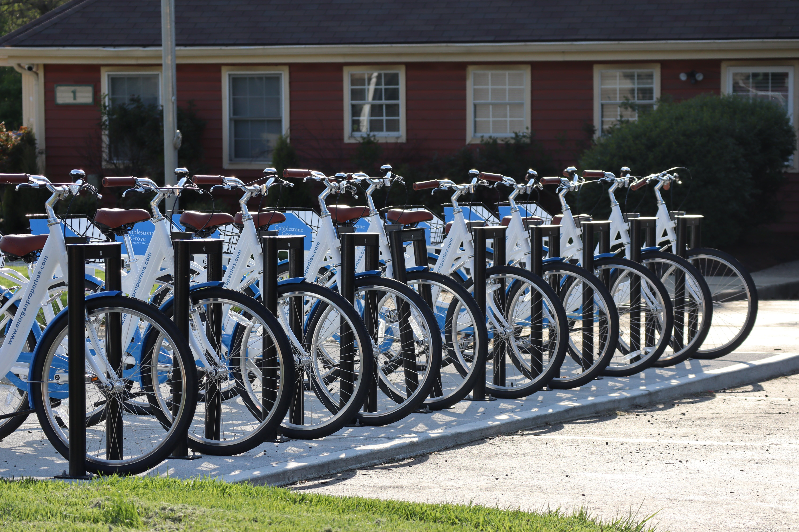

Photo Gallery Grid





Welcome to our Bicycle Types section, where we unravel the diverse world of two-wheelers to help you find the perfect ride for your cycling adventures. Whether you're a thrill-seeker craving the rush of a mountain trail, a city commuter navigating urban streets, or a leisure cyclist exploring scenic paths, we've got you covered. From sleek road bikes to rugged mountain bikes, stylish commuter cycles to versatile hybrid models, dive into our comprehensive guides that break down the features, benefits, and ideal terrain for each bicycle type. Discover the ride that suits your lifestyle and sets you on the path to cycling bliss.